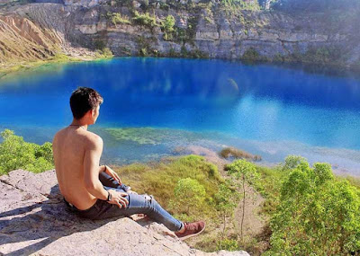
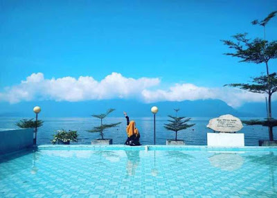
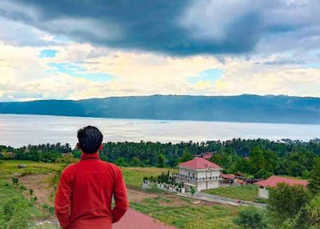
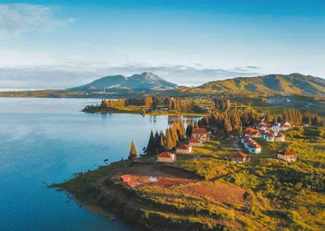

4 Danau di Sumatera Barat Memukau
Untuk Dikunjungi
Dipagari oleh alam luar biasa cantik, Sumatera Barat adalah provinsi di Bumi Andalas
yang memukau. Destinasinya bukan hanya gunung atau pantai semata. Jika Anda sedang
berada di Padang, maka berkunjung ke danau di Sumatera Barat menjadi kegiatan yang
layak diperhitungkan.
Danau Biru Sawahlunto

Danau Biru Sawahlunto ialah danau buatan yang diproses oleh alam. Danau berwarna biru
di Sumatera Barat yang sedang kita bicarakan ini dahulunya merupakan bekas pertambangan
terbuka. Konon, telaga itu terbentuk setelah ditingalkan oleh sebuah perusahaan tambang batubara.
Danau Maninjau

Danau kedua di Sumatera Barat adalah Maninjau. Perairan tawar berkedalaman 105 hingga 165
meter dan menempati kawasan seluas 99 kilometer persegi ini menjadi salah satu ikon wisata
Agam, Sumbar yang terbentuk secara alami.
Danau Singkarak

Singkarak sendiri merupakan destinasi wisata di Solok yang ideal untuk dijelajahi. Tenang saja, walaupun
danaunya semakin luas dari waktu ke waktu, tapi tetap nyaman untuk disinggahi. Pernah mendengar ikan bilah?
Di tempat inilah satu-satunya hewan endemik langka khas Sumbar itu dapat dilihat.
Danau Diatas

Danau Kembar adalah sebutan bagi dua buah nama danau di Alahan Panjang, Sumbar. Jadi julukan itu sama sekali
tidak mendeskripsikan tentang wujud danau kembar Sumatera Barat sendiri. Lantas mengapa dinamai sedemikian rupa?
Pasalnya, letak kedua danau itu hanya dipisahkan daratan sepanjang 13,9 km.